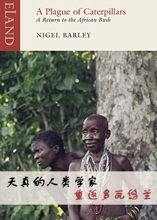

天真的人类学家2: 重返多瓦悠兰 (A Return to the African Bush)
作者：奈吉尔·巴利 (Nigel Barley) [英国]
由于还没有亲眼目睹多瓦悠人最重要的习俗「割礼」，作者再次走进多瓦悠人部落。当作者奈吉尔·巴利进入北喀麦隆丛林，读者便跟着这位欧汉南（Redmond O'Hanlon，《泰晤士报》自然史编辑，知名探险文学作家）誉为「最具可读性的人类学家」深入一趟最有趣、最具启发性的旅程。
难度：
大学
长度：
中篇
分类：
冒险
第一章: 再访杜阿拉 Duala Revisited
第二章: 进人山区 To the Hills
第三章: 恺撒的归恺撒 Rendering unto Caesar
第四章: 再度独当难局 Once More unto the Breach
第五章: 失落的乳房切除术 The Missing Mastectomy
第六章: 我来,我见,签证 Veni, Vidi, Visa
第七章: 类人猿与电影 Of Simians and Cinemas
第八章: 凡有疑虑，进攻 When in Doubt, Charge
第九章: 光与影 Light and Shade
第十章: 迫逐的刺激 Thrills of the chase
第十一章: 黑白人 The Black-White Man
第十二章: 一场不寻常的黑色毛毛虫瘟疫 An Extraordinary Plague of Black, Hairy Caterpillars
第十三章: 结束与开始 Ends and Beginnings